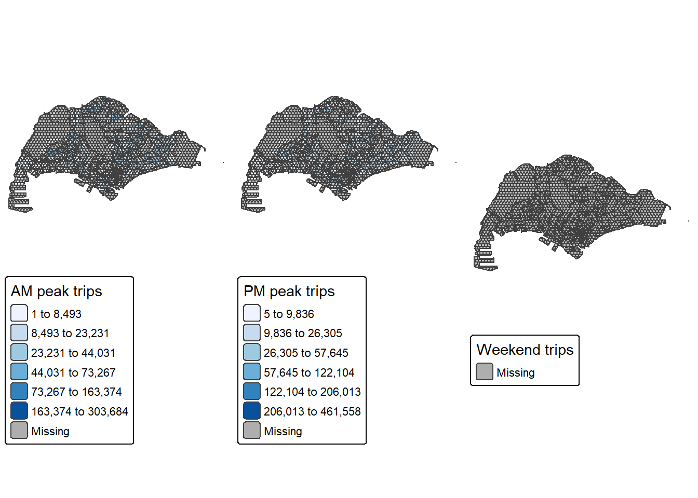

pacman::p_load(sf, tmap, tidyverse, httr, dplyr, lubridate, rvest, spatstat, terra, sparr, stpp, sfdep, spdep)Take-home Exercise 2:
Overview
Urban mobility refers to the movement of people and goods within and between cities, spanning all modes of transport such as walking, cycling, public transit, private vehicles, and freight. Driven by factors like population growth and climate change, urban mobility planning aims to create smart, efficient, and sustainable networks that reduce congestion and emissions while enhancing quality of life and economic vitality. Key developments include the rise of shared mobility services, autonomous vehicles, and integrated smart systems that prioritize user experience, safety, and inclusivity in urban environments.
As city-wide urban infrastructures such as buses, taxis, mass rapid transit, public utilities and roads become digital, the datasets obtained can be used as a framework for tracking movement patterns through space and time. This is especially true with the widespread deployment of pervasive computing technologies such as smart cards, GPS, and RFID in vehicles. For example, routes and ridership data were collected with the use of smart cards and Global Positioning System (GPS) devices available on the public buses. These large-scale movement datasets often contain patterns that reveal important characteristics of urban mobility. Identifying and analyzing such patterns can deepen our understanding of human mobility, supporting better urban management. For both public and private transport providers, these insights enable more informed decisions and improved service planning.
In real-world practices, the use of these massive locational aware data to gain better urban mobility patterns and trends, however, tend to be confined to simple tracking and mapping with GIS applications. This is mainly because conventional GIS tools lack robust geospatial statistics capabilities for analyzing and modeling spatial and spatio-temporal data.
Datasets
Apstial data
For the purpose of this take-home exercise, the latest month Passenger Volume by Origin Destination Bus Stops downloaded from LTA DataMall will be used.
Geospatial data
Two geospatial data will be used in this study, they are:
Bus Stop Location from LTA DataMall. It provides information about all the bus stops currently being serviced by buses, including the bus stop code (identifier) and location coordinates.
Master Plan 2019 Subzone Boundary (No Sea) from Singapore’s open data portal.
Installing and Loading the R packages
The following code chunk will be used to load the R packages which we will require for our analysis.
Importing and Preparing the Data
Importing the Study Area
We import the Master Plan 2019 Subzone polygons, drop any Z/M dimensions that aren’t needed for 2D analysis and transform the data into SVY21/EPSG:3414 which is the common projected CRS used for Singapore. Using a consistent projected CRS ensures distance or area calculations and overlays behave correctly.
The following code chunk will import the masterplan data, removes the Z (elevation) and M (measure) dimension, and transforms into SVY21.
#|eval: false
mpsz_sf <- st_read("data/geospatial/MasterPlan2019SubzoneBoundaryNoSeaKML.kml") %>%
st_zm(drop = TRUE, what = "ZM") %>% st_transform(crs = 3414)Reading layer `URA_MP19_SUBZONE_NO_SEA_PL' from data source
`C:\Users\zongy\OneDrive\Desktop\SMU\ISSS626 - Geospatial Analytics\zongyin-tan\ISSS626-Geospatial-zytan\Take-home_Ex\Take-home_Ex2\data\geospatial\MasterPlan2019SubzoneBoundaryNoSeaKML.kml'
using driver `KML'
Simple feature collection with 332 features and 2 fields
Geometry type: MULTIPOLYGON
Dimension: XY
Bounding box: xmin: 103.6057 ymin: 1.158699 xmax: 104.0885 ymax: 1.470775
Geodetic CRS: WGS 84The following code chunk will be use to filter the unwanted areas as we will be focused on the main island of Singapore.
#|eval: false
extract_kml_field <- function(html_text, field_name) {
if (is.na(html_text) || html_text == "") return(NA_character_)
page <- read_html(html_text)
rows <- page %>% html_elements("tr")
value <- rows %>%
keep(~ html_text2(html_element(.x, "th")) == field_name) %>%
html_element("td") %>%
html_text2()
if (length(value) == 0) NA_character_ else value
}
mpsz_sf <- mpsz_sf %>%
mutate(
REGION_N = map_chr(Description, extract_kml_field, "REGION_N"),
PLN_AREA_N = map_chr(Description, extract_kml_field, "PLN_AREA_N"),
SUBZONE_N = map_chr(Description, extract_kml_field, "SUBZONE_N"),
SUBZONE_C = map_chr(Description, extract_kml_field, "SUBZONE_C")
) %>%
select(-Name, -Description) %>%
relocate(geometry, .after = last_col())
mpsz_cl <- mpsz_sf %>%
filter(SUBZONE_N != "SOUTHERN GROUP",
PLN_AREA_N != "WESTERN ISLANDS",
PLN_AREA_N != "NORTH-EASTERN ISLANDS")#|eval: false
#|echo: false
write_rds(mpsz_cl,
"data/rds/mpsz_cl.rds")#|echo: false
mpsz_cl <- read_rds("data/rds/mpsz_cl.rds")Importing the “Bus Stop Location” Data
We import the Bus Stop Location dataset from LTA DataMall. This dataset contains all active bus stops in Singapore along with their coordinates. We then transform it into the same SVY21 coordinate system as the Master Plan data so that both layers align perfectly when plotted or joined later.
BusStop = st_read(dsn = "data/geospatial/",
layer = "BusStop")Reading layer `BusStop' from data source
`C:\Users\zongy\OneDrive\Desktop\SMU\ISSS626 - Geospatial Analytics\zongyin-tan\ISSS626-Geospatial-zytan\Take-home_Ex\Take-home_Ex2\data\geospatial'
using driver `ESRI Shapefile'
Simple feature collection with 5172 features and 2 fields
Geometry type: POINT
Dimension: XY
Bounding box: xmin: 3970.122 ymin: 26482.1 xmax: 48285.52 ymax: 52983.82
Projected CRS: SVY21BusStop <- st_transform(BusStop, 3414)Importing the “Passenger Volume by Origin Destination Bus Stops” Data
We then load the Passenger Volume by Origin–Destination Bus Stops data from LTA DataMall using read_csv(). This dataset records the number of passengers traveling between origin and destination bus stops. It’s an aspatial dataset, meaning it contains no coordinates yet.
odbus <- read_csv("data/aspatial/origin_destination_bus_202509.csv")#|eval: false
#|echo: false
write_rds(odbus,
"data/rds/odbus.rds")#|echo: false
odbus <- read_rds("data/rds/odbus.rds")Extracting the Bus Stops within Singapore
Not all bus stops in the LTA dataset are located within the main island. In this step, we perform a spatial join between the bus stop data and the Master Plan subzones to keep only those bus stops located within the mainland boundary. This ensures that our later analyses only include relevant bus stops in Singapore’s main island.
BusStop_in_SG <- st_join(
BusStop, mpsz_cl,
join = st_within,
left = FALSE)#|eval: false
#|echo: false
write_rds(BusStop_in_SG,
"data/rds/busstop.rds")#|echo: false
BusStop_in_SG <- read_rds("data/rds/busstop.rds")Mapping the Study Area and Bus Stop Locations
The following code chunk creates a simple map using tmap to visualize the study area and all the bus stops that fall within it. This quick check helps confirm that our datasets are properly aligned and that the spatial join worked correctly before we move on.
tm_shape(mpsz_cl) +
tm_polygons() +
tm_shape(BusStop_in_SG) +
tm_dots()
Deriving the 375 m Hexagon TAZ Layer
We first create a regular hexagon grid to act as Traffic Analysis Zones. The exercise specifies 375 m as the perpendicular distance from the hexagon center to a side. That means the distance between opposite sides is 750 m. We build a hex grid that covers the study area, clip it to the mainland boundary, and assign an ID to each cell.
hex_grid <- st_make_grid(
mpsz_cl,
cellsize = 750,
square = FALSE,
what = "polygons"
) %>%
st_as_sf() %>%
st_intersection(mpsz_cl)Cleaning the Grid
Clipping can introduce tiny geometry issues or empty pieces. Here we make geometries valid and drop any empty cells. This keeps later neighbour building stable.
hex_grid <- hex_grid %>%
st_make_valid() %>%
filter(!st_is_empty(st_geometry(.)))
nrow(hex_grid)[1] 3254Giving Each Hexagon an ID
Local statistics and joins are much easier when every zone has a stable key. We add a running ID to the grid that we will carry through the whole workflow.
hex_grid <- hex_grid %>%
mutate(hex_id = row_number()) %>%
relocate(hex_id)Building Contiguity Neighbours and Row-Standardised Weights
We now create a queen contiguity neighbour list (cells are neighbours if they touch at least a corner). We keep only cells that have at least one neighbour and rebuild the list. Finally, we convert the neighbour list to row-standardised weights (“W” style), which is what Chapter 10 uses for local statistics.
# initial neighbours
nb_q <- poly2nb(hex_grid, queen = TRUE)
# keep cells that have ≥1 neighbour
has_nb <- card(nb_q) > 0
hex_grid <- hex_grid[has_nb, ]
nb_q <- subset(nb_q, has_nb)
# row-standardised weights
lw_q <- nb2listw(nb_q, style = "W")
# quick checks (R4GDSA style: show some output)
summary(nb_q)Neighbour list object:
Number of regions: 3253
Number of nonzero links: 21580
Percentage nonzero weights: 0.203931
Average number of links: 6.633876
3 disjoint connected subgraphs
Link number distribution:
1 2 3 4 5 6 7 8 9 10 11 12 13 14 15
10 54 91 106 418 997 699 481 222 55 63 43 7 1 6
10 least connected regions:
144 151 158 344 504 1148 1150 1151 3005 3156 with 1 link
6 most connected regions:
208 368 740 889 1203 1936 with 15 linkssummary(lw_q)Characteristics of weights list object:
Neighbour list object:
Number of regions: 3253
Number of nonzero links: 21580
Percentage nonzero weights: 0.203931
Average number of links: 6.633876
3 disjoint connected subgraphs
Link number distribution:
1 2 3 4 5 6 7 8 9 10 11 12 13 14 15
10 54 91 106 418 997 699 481 222 55 63 43 7 1 6
10 least connected regions:
144 151 158 344 504 1148 1150 1151 3005 3156 with 1 link
6 most connected regions:
208 368 740 889 1203 1936 with 15 links
Weights style: W
Weights constants summary:
n nn S0 S1 S2
W 3253 10582009 3253 1044.446 13284.6
Note
Most interior hexagons have between 6 and 8 links while a few near the coastline have only one.
The “10 least connected regions” list gives the IDs of the hexagons that touch only one other cell
The “6 most connected regions” have up to 15 links.
The following code chunk plots a map of how many neighbours each hex has helps confirm the contiguity looks reasonable.
hex_grid <- hex_grid %>%
mutate(n_nb = card(nb_q))
tmap_mode("plot")
tm_shape(hex_grid) +
tm_polygons(
col = "n_nb",
palette = "Blues",
title = "Neighbour count"
) +
tm_borders(alpha = 0.4) +
tm_layout(frame = FALSE)
The map shows how many neighbouring hexagons each 375 m traffic analysis zone (TAZ) has. Most of the hexagons across the interior of Singapore have between 6 and 8 neighbours. In contrast, hexagons along the coastal and boundary areas tend to have fewer neighbours, often between 1 and 4.
The few darker blue cells with higher neighbour counts (>12) appear where multiple hexagons meet around narrow inlets or irregular landforms.
Assigning Bus Stops to Hexagons
To compute hex-level indicators later, we first link each bus stop to the hexagon that contains it. We keep a simple table with the bus stop code and the hex ID.
# centroids are fine for point-in-polygon with sf points
st_agr(BusStop_in_SG) <- "constant"
stops_hex <- BusStop_in_SG %>%
st_join(select(hex_grid, hex_id), join = st_within) %>%
st_drop_geometry() %>%
select(BUS_STOP_N, hex_id)
head(stops_hex) BUS_STOP_N hex_id
1 65059 2026
2 16171 274
3 61101 619
4 01239 2251
5 17269 310
6 11291 872Preparing OD trips for time-of-day analysis
We tidy the OD table and keep only valid origin–destination pairs. This gives us one record per pair with a total trip count and keeps the time fields that we will use to form the required peak periods.
od <- odbus %>%
rename(
ORI = ORIGIN_PT_CODE,
DES = DESTINATION_PT_CODE,
HOUR = TIME_PER_HOUR,
DTYPE = DAY_TYPE,
TRIPS = TOTAL_TRIPS
) %>%
mutate(
ORI = as.character(ORI),
DES = as.character(DES),
HOUR = as.integer(HOUR),
TRIPS = as.numeric(TRIPS)
) %>%
filter(!is.na(ORI), !is.na(DES), !is.na(HOUR), !is.na(TRIPS))Linking origin stops to hexagons
We join each origin stop code to the hexagon that contains it, using the lookup you already created. We keep only origin codes that successfully match a hex ID. This gives us a simple key that lets us aggregate trips at the hex level.
ori_lookup <- stops_hex %>%
rename(ORI = BUS_STOP_N, hex_id_o = hex_id)
od_ohex <- od %>%
left_join(ori_lookup, by = "ORI") %>%
filter(!is.na(hex_id_o))Defining the three time windows
The following code chunk will label each OD record into one of the three study windows.
Weekday morning peak is 6 to 9 which means 6, 7, 8
Weekday afternoon peak is 17 to 20 which means 17, 18, 19
Weekend or holiday window is 11 to 20 which means 11 to 19 and it applies only to weekend or holiday days
od_tagged <- od_ohex %>%
mutate(
PERIOD = case_when(
DTYPE %in% c("WEEKDAY") & HOUR %in% 6:8 ~ "AM peak",
DTYPE %in% c("WEEKDAY") & HOUR %in% 17:19 ~ "PM peak",
DTYPE %in% c("WEEKENDS/HOLIDAYS","WEEKEND","HOLIDAY") & HOUR %in% 11:19 ~ "Weekend",
TRUE ~ NA_character_
)
) %>%
filter(!is.na(PERIOD))Summarising origin-generated trips at hexagon level
We now collapse the OD table to total origin trips for each hexagon by period. This produces one table that can be joined back to the hexagon layer for mapping and later analysis.
hex_trips <- od_tagged %>%
group_by(hex_id_o, PERIOD) %>%
summarise(TRIPS = sum(TRIPS, na.rm = TRUE), .groups = "drop") %>%
rename(hex_id = hex_id_o)Joining totals back to the hex grid
We create three hex layers, one per period, with a single trips column ready to map. Any hex with no trips in a period will have NA.
hex_am <- hex_grid %>%
left_join(filter(hex_trips, PERIOD == "AM peak") %>% select(hex_id, TRIPS),
by = "hex_id")
hex_pm <- hex_grid %>%
left_join(filter(hex_trips, PERIOD == "PM peak") %>% select(hex_id, TRIPS),
by = "hex_id")
hex_wknd <- hex_grid %>%
left_join(filter(hex_trips, PERIOD == "Weekend") %>% select(hex_id, TRIPS),
by = "hex_id")We will plot three choropleths side by side makes the time-of-day contrast easy to read and is directly comparable.
tmap_mode("plot")
am_map <- tm_shape(hex_am) +
tm_polygons(col = "TRIPS",
style = "jenks",
n = 6,
palette = "Blues",
title = "AM peak trips") +
tm_borders(alpha = 0.4) +
tm_layout(frame = FALSE)
pm_map <- tm_shape(hex_pm) +
tm_polygons(col = "TRIPS",
style = "jenks",
n = 6,
palette = "Blues",
title = "PM peak trips") +
tm_borders(alpha = 0.4) +
tm_layout(frame = FALSE)
wknd_map <- tm_shape(hex_wknd) +
tm_polygons(col = "TRIPS",
style = "jenks",
n = 6,
palette = "Blues",
title = "Weekend trips") +
tm_borders(alpha = 0.4) +
tm_layout(frame = FALSE)
tmap_arrange(am_map, pm_map, wknd_map, ncol = 3, asp = 1)